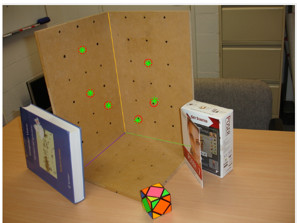

Camera calibration&homography
Lab3 of ENGN4528(Computer Vision) - 2020 S1
Used DLT algorithm to calibrate a camera.
Computed the camera matrix and its decomposition.
Used DLT algorithm to solve homography program.
Graded NA/100.
[Full report]
This link contains all lab material.
